以下做一个简单的讨论
实际上朗姆相关设定中最大的问题不是超忆，而是单眼超忆。从棋盘篇朗姆的自述来看，17年前，朗姆的左眼具有过目不忘的能力，右眼可以正常视物，但没有这种能力。17年后，朗姆的左眼可能遭受了某种物理损伤（例如被截拳道戳瞎），漫画中左眼没有画瞳孔。而棋盘篇末尾朗姆自言自语，似乎是希望某种药物（也许就是A药）让时光倒流，恢复右眼的能力。没提左眼，可能是因为左眼已经永久性地丧失了这种能力。
换言之，朗姆过目不忘的能力是跟眼睛相关的，而且左右眼相对独立。物理损伤和自然衰老都可以让眼睛失去这种能力。完好的一侧眼睛在“时光倒流”之后可以恢复过目不忘，而物理损伤的眼睛不能复原，也没办法找回这种过目不忘的能力。
换言之，朗姆过目不忘的能力是跟眼睛相关的，而且左右眼相对独立。物理损伤和自然衰老都可以让眼睛失去这种能力。完好的一侧眼睛在“时光倒流”之后可以恢复过目不忘，而物理损伤的眼睛不能复原，也没办法找回这种过目不忘的能力。
2024-01-10 01:40 | 贴吧用户_78Ay7tK:就是a药说了 在下面话的 下面一个
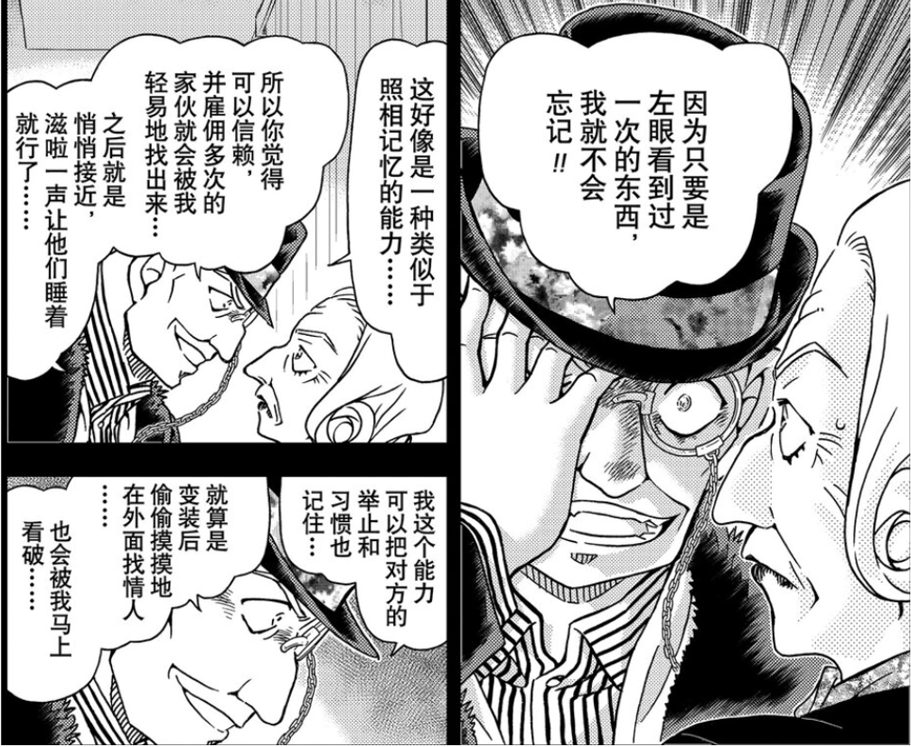
朗姆能力自述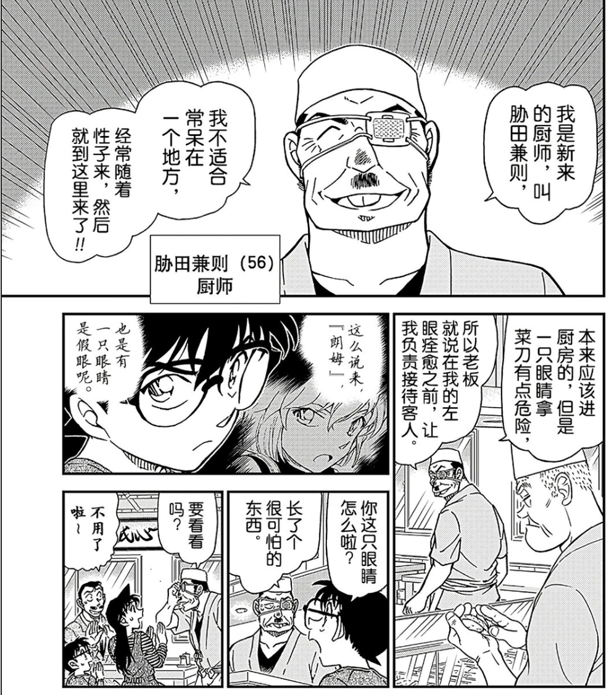
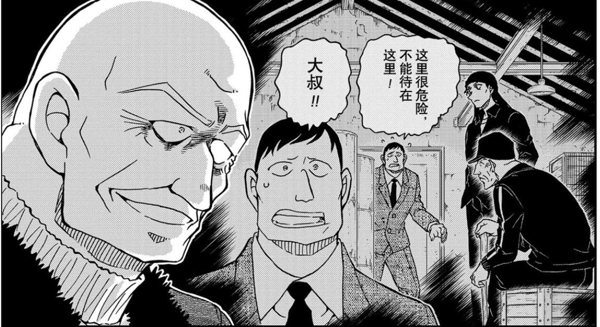
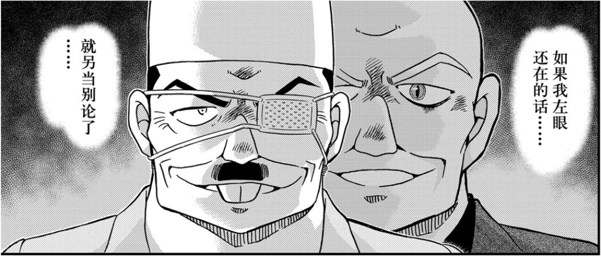
左眼：曾经有特殊能力，受到了某种物理损伤后失去这种能力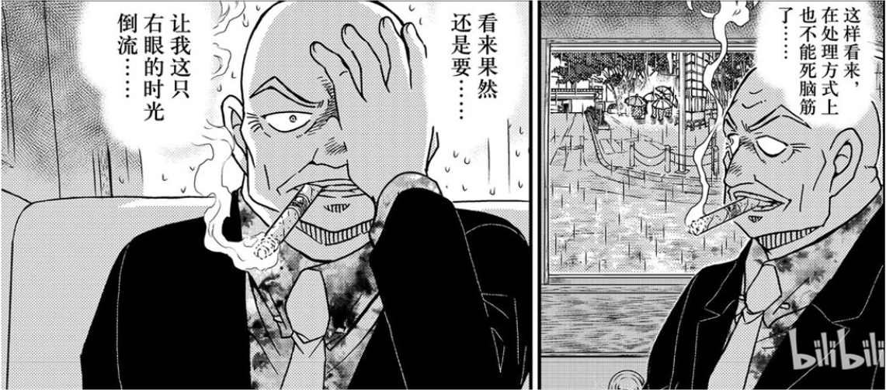
右眼：疑似是因为自然衰老而失去了特殊能力，失去能力的时间比17年前更早，但视力正常朗姆这能力撑死了在神夏里当个小boss，蜗壳磕药变大变小随便逆熵人体黑洞QJ物理定律说什么了吗 ？
？
？2023-11-24 07:48 | 贴吧用户_0bDS2EM:可是朗姆想上位，没准会被琴酒或者boss解决2024-01-07 06:24 | sfgtdhj:神夏第三季的BOSS好像有个能力类似于朗姆
这里其实涉及的一个生理学问题，即朗姆的神经系统是如何处理视觉信息的。对正常人类而言，眼球后部有视网膜，感光产生视觉信号。按照一般的假说，视觉信号沿着【视网膜-->下丘脑视交叉-->枕叶初级视皮层-->颞下回视皮层-->海马体及相关记忆皮层】的顺序转化为记忆。
人类虽然有两个眼睛、两半大脑，但并非一半大脑负责一只眼睛。相反，两只眼睛的视觉信息在【视交叉】处就被汇总在一起，按视野重组，左侧视野交给右脑负责，右侧视野交给左脑负责；人类哪怕只剩一只眼睛，也是能同时注意到左右两侧的不同视野的。枕叶会进一步分拣视觉信息，走腹流交给颞下回进行识别。人脸识别是在颞下回进行的，脸盲症就是颞下回发生的生理病变。
更进一步地说，超忆症患者也遵循完全一致的生理逻辑，只是在最后一步形成和储存记忆时，把记忆信息错误的放到了额叶或者顶叶中部分不该用于记忆的区域。
简而言之，识别与记忆都是以大脑为首的神经系统的职能。单纯丢掉一只眼睛不会影响人的记忆力，也没有单眼衰老影响记忆力的说法。老花眼和老年痴呆是两种不同的病症。朗姆的神经系统应当是与正常人类不太相同的。
人类虽然有两个眼睛、两半大脑，但并非一半大脑负责一只眼睛。相反，两只眼睛的视觉信息在【视交叉】处就被汇总在一起，按视野重组，左侧视野交给右脑负责，右侧视野交给左脑负责；人类哪怕只剩一只眼睛，也是能同时注意到左右两侧的不同视野的。枕叶会进一步分拣视觉信息，走腹流交给颞下回进行识别。人脸识别是在颞下回进行的，脸盲症就是颞下回发生的生理病变。
更进一步地说，超忆症患者也遵循完全一致的生理逻辑，只是在最后一步形成和储存记忆时，把记忆信息错误的放到了额叶或者顶叶中部分不该用于记忆的区域。
简而言之，识别与记忆都是以大脑为首的神经系统的职能。单纯丢掉一只眼睛不会影响人的记忆力，也没有单眼衰老影响记忆力的说法。老花眼和老年痴呆是两种不同的病症。朗姆的神经系统应当是与正常人类不太相同的。
2023-12-03 23:02 | Susialways:对啊 超忆是有的 但是不是因为眼睛特殊构造吧……所以我觉得这里就很超能力…但是都死小返老还童了 好像也不能用一般的医学来分析……？
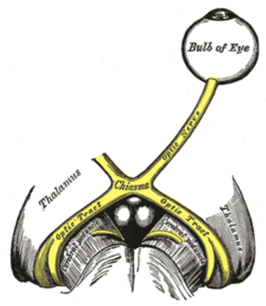
左右眼的视觉信号在视交叉处汇总在一起，重组后再按视野方向被送到不同的半脑。此时的视觉信息还是未经处理的。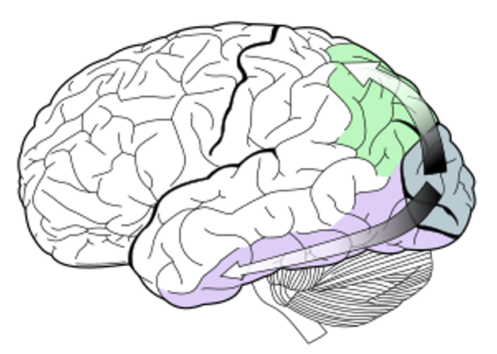
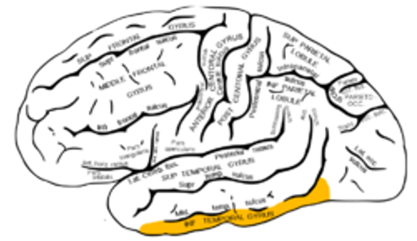
视觉信号经过初步处理后，再次被分拣、传递到不同的区域。其中，腹流（上图靠下的箭头）负责识别视觉信号中看到了什么东西（What），颞下回（下图橙色区域）是进行人脸识别的区域。辨别两人是否是同一人，正常来说应当由这个区域负责。而输入到该区域的视觉信号已经和左右眼无关了。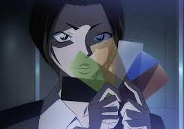
M20中库拉索的特征可以用异色瞳+超忆症进行描述。因为大脑内的病变，记忆被储存在本不应该储存记忆的区域。在事故中，她受到的是脑损伤（而非眼部损伤），随后发生失忆，这也是合理的。整体来说，库拉索的能力可以被列入科学幻想的范畴。我现在能想到的只有超忆症
类似神夏第三季里的马格努森（米尔沃顿）吧，拥有超强记忆宫殿。朗姆可能参考过这个人物连朗姆的故事和米尔沃顿都很像
既然朗姆的特征症状是人类所不具有的（记忆能力与眼睛或视网膜高度绑定），那按照开头提出的标准，可以将其划分为超能力。
而之所以要纠结是科幻还是超能力，是因为有一种说法认为，推理作品中不能出现超能力，名柯不能出现超能力。
具体而言，诺克斯十诫中强调【故事中不可存有超自然力量】，范达因二十条中则放宽为【侦探不能用占卜之类的超能力确定凶手】，现代其实已经存在了很多超能力推理智斗作品，作者将超能力的设定和框架预先展现出来，相关情节对于故事内的角色和故事外的读者而言都是【可推理的】。虽然名柯中的很多设定简直是在脚踩诺克斯、骑脸范达因，但过去三十年中依然遵循了这个【可推理】的最高原则，以确保故事的趣味性。
列车篇基德救场算是一个反面典型。虽然这篇开头就提到了基德可能出现，也给出了柯南推理基德在场的过程。但是，对于故事中黑方、以及大部分红方角色而言，“基德救场”都是一个不可推理的选项。那一篇中基德最Bug的能力不是易容，而是能在爆炸中飞走；这一点只有他能做到，而基德那天在现场是一个纯粹偶然事件，所以会让读者吐槽机械降神，质疑如果基德不在场的话，柯南是不是真的束手无策了。若是把“基德救场”当成一个常态化的选项，红黑对决的紧张氛围感和前后逻辑性就全被打破了。
那怎样算是【可推理的】超能力呢？首先必须要做好铺垫和提示（易容术在本作很早期就已经出现了），其次要明确好限制条件。红子的魔法其实是有一些限制条件的，但能力作用范围还是比较宽泛。并且，大规模引入魔法世界观的话，会给已经闭环的推理逻辑造成漏洞。譬如说，密室杀人案嫌疑人们如果狡辩，没有人是凶手，死者是被魔女用魔法杀掉的，那再想把推理故事顺利讲下去的难度就会变得很高。
以这个标准来看，朗姆的眼睛这种低魔超能力，在提前告知读者、并给剧中角色做好提示（阿曼达暗号）的前提下，可以融入到故事的逻辑中，本身是【可推理的】。
而《魔术快斗》《剑勇传说》中的魔法、神珠则属于超模设定，一般只能作为彩蛋加入名柯的故事中。但是同时，白马探、冲田总司的例子证明，两部作品中的角色是可以在名柯舞台上发挥重要作用的，当然，前提是不能让名柯中的主要角色观察到超自然力量的存在。
而之所以要纠结是科幻还是超能力，是因为有一种说法认为，推理作品中不能出现超能力，名柯不能出现超能力。
具体而言，诺克斯十诫中强调【故事中不可存有超自然力量】，范达因二十条中则放宽为【侦探不能用占卜之类的超能力确定凶手】，现代其实已经存在了很多超能力推理智斗作品，作者将超能力的设定和框架预先展现出来，相关情节对于故事内的角色和故事外的读者而言都是【可推理的】。虽然名柯中的很多设定简直是在脚踩诺克斯、骑脸范达因，但过去三十年中依然遵循了这个【可推理】的最高原则，以确保故事的趣味性。
列车篇基德救场算是一个反面典型。虽然这篇开头就提到了基德可能出现，也给出了柯南推理基德在场的过程。但是，对于故事中黑方、以及大部分红方角色而言，“基德救场”都是一个不可推理的选项。那一篇中基德最Bug的能力不是易容，而是能在爆炸中飞走；这一点只有他能做到，而基德那天在现场是一个纯粹偶然事件，所以会让读者吐槽机械降神，质疑如果基德不在场的话，柯南是不是真的束手无策了。若是把“基德救场”当成一个常态化的选项，红黑对决的紧张氛围感和前后逻辑性就全被打破了。
那怎样算是【可推理的】超能力呢？首先必须要做好铺垫和提示（易容术在本作很早期就已经出现了），其次要明确好限制条件。红子的魔法其实是有一些限制条件的，但能力作用范围还是比较宽泛。并且，大规模引入魔法世界观的话，会给已经闭环的推理逻辑造成漏洞。譬如说，密室杀人案嫌疑人们如果狡辩，没有人是凶手，死者是被魔女用魔法杀掉的，那再想把推理故事顺利讲下去的难度就会变得很高。
以这个标准来看，朗姆的眼睛这种低魔超能力，在提前告知读者、并给剧中角色做好提示（阿曼达暗号）的前提下，可以融入到故事的逻辑中，本身是【可推理的】。
而《魔术快斗》《剑勇传说》中的魔法、神珠则属于超模设定，一般只能作为彩蛋加入名柯的故事中。但是同时，白马探、冲田总司的例子证明，两部作品中的角色是可以在名柯舞台上发挥重要作用的，当然，前提是不能让名柯中的主要角色观察到超自然力量的存在。
看你对超能力的定位是什么，如果你的定位是复联这种的，那就不算，如果是定位现实中有些人功能异于常人，那就算
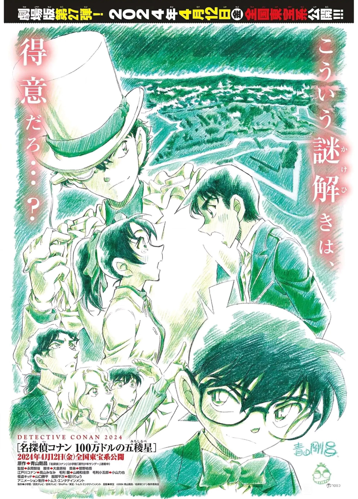
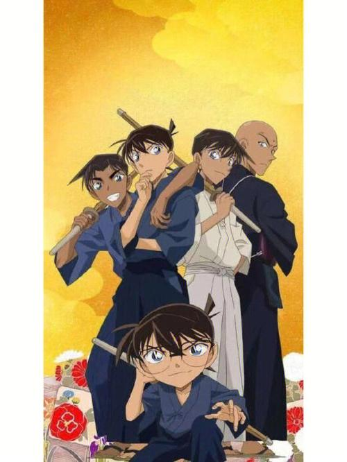
M27中，剑勇出身的角色也将登上大银幕朗姆很明显就不是魔法那种，就跟最强大脑那群人一样过目不忘，即使你伪装他也能瞬间发现，属于最强大脑里的佼佼者那种人
正文完（笑）最后是一点吐槽
上（作）帝（者）是公平的，给予朗姆超能力眼睛的同时，也剥夺了他正常人类多线程思考的能力。和早期计算机类似，朗姆在思考一个问题的时候会阻塞其他问题的思考；在世纪之交的2000年，真正意义上的多线程CPU“奔4”才算面世，但朗姆的大脑并没有随之升级换代。也许我们再看到羽田浩司案类似的高血压操作后，可以认真思考一下，有没有一种可能，朗姆其实是组织生产的生化改造人
上（作）帝（者）是公平的，给予朗姆超能力眼睛的同时，也剥夺了他正常人类多线程思考的能力。和早期计算机类似，朗姆在思考一个问题的时候会阻塞其他问题的思考；在世纪之交的2000年，真正意义上的多线程CPU“奔4”才算面世，但朗姆的大脑并没有随之升级换代。也许我们再看到羽田浩司案类似的高血压操作后，可以认真思考一下，有没有一种可能，朗姆其实是组织生产的生化改造人
附1：“诺克斯十戒”。
1.凶手必须在故事一开始便登场。
2.破案手法不能使用超自然力量。
3.案发现场不能有秘密通道。
4.作案过程中不能使用未知的毒药或者需要复杂科学解释的机械。
5.不能有中国人登场。
6.侦探不能凭借偶然性或第六感破案。
7.除了欺骗登场人物外，侦探本身不可能是凶手。
8.侦探不能使用未透露给读者的提示来破案。
9.助手角色对案情的判断必须完全让读者知道。
10.双胞胎或一人分饰两角的情况必须实现告知读者
1.凶手必须在故事一开始便登场。
2.破案手法不能使用超自然力量。
3.案发现场不能有秘密通道。
4.作案过程中不能使用未知的毒药或者需要复杂科学解释的机械。
5.不能有中国人登场。
6.侦探不能凭借偶然性或第六感破案。
7.除了欺骗登场人物外，侦探本身不可能是凶手。
8.侦探不能使用未透露给读者的提示来破案。
9.助手角色对案情的判断必须完全让读者知道。
10.双胞胎或一人分饰两角的情况必须实现告知读者
2023-11-24 09:23 | 暗黑轩辕氏:回复 贴吧用户_J7eUEPR :为什么不能有中国人？2023-11-24 09:44 | 贴吧用户_J7eUEPR:回复 暗黑轩辕氏 : 这个是20世纪初提出的，当时刻板印象过于泛滥了，认为中国人人均会武术气功，还有些偏负面的刻板印象。其实换成犹太人、吉普赛人、瓦坎达人之类的也一样，就是说尽量不要让读者根据人种国别之类的与剧情无关的因素进行推理。2023-11-24 09:48 | 暗黑轩辕氏:回复 贴吧用户_J7eUEPR :2023-11-24 10:39 | KingAnax:，真是时代的眼泪了
回复 暗黑轩辕氏 :因为那时候刻板印象中国人都会功夫能穿墙，这条实际是说不能有超自然力量的人2023-11-24 11:04 | 贴吧用户_0bDS2EM:三和十出现过；不过三是别人查偷情造的，然后意外发现；十的是佛灭日；这两个都是印象深刻的
附2：“范达因二十准则。
1.破案线索必须进行详细描述。
2.除了凶手的诡计之外，作者不能使用欺骗读者的写作手法。
3.不需要多余的恋爱情节。推理小说的本质是将犯人绳之以法而不是让热恋的男女引入结婚礼堂。
4.侦探或探员不能突然变成凶手。这是无耻的欺骗。
5.必须根据逻辑推理找出犯人，不能凭借偶然、巧合或无动机的自首解决案件。
6.侦探小说中必须要有侦探登场，并通过他的搜查和完整推理解决案件。
7.长篇小说中尸体是必不可少的。杀人以外的轻微犯罪对读者没有持久的吸引力。
8.不能通过占卜、特异功能或读心术来揭露犯罪真相。最好侦探的角色只由一人扮演。
9.一个案件如果由多位侦探合力解决的话，不但推理思路显得散乱，对读者来说也不公平。这就好比读者是在和一队人竞赛一般。
10.凶手必须在故事中扮演重要的角色。如果在故事最后意外登场的人物是罪魁祸首的话，就意味着作者的无能。
11.把作为配角作为罪犯的故事安排过于简单。那种小角色如果犯了罪根本没有必要拿来写进书里面。
12.无论发生了多少件凶杀案，真凶只能有一个。但是有配角作为共犯倒也无妨。
13.冒险小说或间谍小说虽然无妨，但是侦探小说中的凶手绝不能隶属于任何秘密组织或黑手党。他们会受到非法组织的保护所以这是不公平的。
14.杀人手法以及侦破手法必须是合理以及科学的。比如毒杀的情况下，不能使用未知的毒药。
15.在侦探指出凶手之前，作者必须堂堂正正、一五一十地将破案线索全部提示给读者。 16.应该避免多余的情景描写和文学修饰。
17.避免将职业罪犯设定为凶手，那些人应该交给警察来对付。真正有魅力的犯罪是门外汉所为。
18.案件的结尾不能以意外身亡或自杀草草了事。这样虎头蛇尾的手法是对读者的欺诈。 19.作案动机最好是出于个人原因。国际阴谋和政治动机属于间谍小说的范畴。
20.有自尊的作家应该避免以下手法。这些都是用烂了的招数。
×用犯罪现场留下的烟灰等遗留物同嫌犯的香烟作比较来找出凶手。
×装神弄鬼诱骗凶手自首。
×伪造指纹
×用替身制造不在场证明
×因为看门口没吠叫就知道凶手与这只狗很熟。
×双胞胎替身诡计。
×使用皮下注射或致命毒药。
×在警官进入后进行密室杀人。
×询问时根据疑犯的反应缉凶。
×在最后阶段解开暗号并破解案件。
1.破案线索必须进行详细描述。
2.除了凶手的诡计之外，作者不能使用欺骗读者的写作手法。
3.不需要多余的恋爱情节。推理小说的本质是将犯人绳之以法而不是让热恋的男女引入结婚礼堂。
4.侦探或探员不能突然变成凶手。这是无耻的欺骗。
5.必须根据逻辑推理找出犯人，不能凭借偶然、巧合或无动机的自首解决案件。
6.侦探小说中必须要有侦探登场，并通过他的搜查和完整推理解决案件。
7.长篇小说中尸体是必不可少的。杀人以外的轻微犯罪对读者没有持久的吸引力。
8.不能通过占卜、特异功能或读心术来揭露犯罪真相。最好侦探的角色只由一人扮演。
9.一个案件如果由多位侦探合力解决的话，不但推理思路显得散乱，对读者来说也不公平。这就好比读者是在和一队人竞赛一般。
10.凶手必须在故事中扮演重要的角色。如果在故事最后意外登场的人物是罪魁祸首的话，就意味着作者的无能。
11.把作为配角作为罪犯的故事安排过于简单。那种小角色如果犯了罪根本没有必要拿来写进书里面。
12.无论发生了多少件凶杀案，真凶只能有一个。但是有配角作为共犯倒也无妨。
13.冒险小说或间谍小说虽然无妨，但是侦探小说中的凶手绝不能隶属于任何秘密组织或黑手党。他们会受到非法组织的保护所以这是不公平的。
14.杀人手法以及侦破手法必须是合理以及科学的。比如毒杀的情况下，不能使用未知的毒药。
15.在侦探指出凶手之前，作者必须堂堂正正、一五一十地将破案线索全部提示给读者。 16.应该避免多余的情景描写和文学修饰。
17.避免将职业罪犯设定为凶手，那些人应该交给警察来对付。真正有魅力的犯罪是门外汉所为。
18.案件的结尾不能以意外身亡或自杀草草了事。这样虎头蛇尾的手法是对读者的欺诈。 19.作案动机最好是出于个人原因。国际阴谋和政治动机属于间谍小说的范畴。
20.有自尊的作家应该避免以下手法。这些都是用烂了的招数。
×用犯罪现场留下的烟灰等遗留物同嫌犯的香烟作比较来找出凶手。
×装神弄鬼诱骗凶手自首。
×伪造指纹
×用替身制造不在场证明
×因为看门口没吠叫就知道凶手与这只狗很熟。
×双胞胎替身诡计。
×使用皮下注射或致命毒药。
×在警官进入后进行密室杀人。
×询问时根据疑犯的反应缉凶。
×在最后阶段解开暗号并破解案件。
2023-11-24 07:44 | tay局长:73好像至少犯了四分之一吧2023-11-24 08:49 | 贴吧用户_0Q8721R:回复 tay局长 :大部分推理作品都会犯上好几条，问题不大（）2023-11-24 11:07 | 贴吧用户_0bDS2EM:第二条其实有一个关键点，那就是得处于“上帝视角”才可以；当“回忆”时就是“个人视角”，回忆是会被美化的
神探夏洛克里第三季的最终BOSS是一个将全伦敦人民的信息记录在自己的脑子里的人，靠着这些信息，他到处威胁别人，说实话，朗姆这个还算菜的了，主要他作为黑衣组织的二把手，在推理方面太弱了 我觉得乌丸肯定是代表名侦探柯南的莫里亚蒂，是个犯罪教授，作为最终BOSS肯定很厉害，就是现在黑衣组织其他的，实在有些丢人
我觉得乌丸肯定是代表名侦探柯南的莫里亚蒂，是个犯罪教授，作为最终BOSS肯定很厉害，就是现在黑衣组织其他的，实在有些丢人
我觉得乌丸肯定是代表名侦探柯南的莫里亚蒂，是个犯罪教授，作为最终BOSS肯定很厉害，就是现在黑衣组织其他的，实在有些丢人2023-11-24 19:26 | 陶乐西😁:琴酒现在被提咖的很有塞巴斯蒂安莫兰的感觉。神夏三那个小boss就是米尔沃顿啊，朗姆的故事很像米尔沃顿所以之前有人分析他可能会被若狭干掉
感觉他跟库拉索都像超忆症加工出来的能力…蛇眼算是一个特征，但其实羽田跟阿曼达的记忆也好到离谱…
算吧，
纯外行，我觉得可以解释为，单眼视物时能更有效保持精神集中，有助于提升对影像的记忆和分析效率？单眼时捕获到的是2d信息而不是双眼的3d，可能大脑不需要处理有关距离或位置的内容，而集中于平面影像上？就好比做那种智力测试图像记忆题时，不能紧盯着屏幕而要使目光发散，让两只眼的成像不进行合成，大脑也就没有了对于距离信息的处理，这种状态做图像记忆题效果会更好
至于为什么是左眼，我觉得应该左眼是朗姆的主视觉成像眼？就是人眼看东西时主要看到的影像来源于的那只眼。我试了一下主视觉眼似乎单眼视物稳定性要比另一只好点
至于为什么是左眼，我觉得应该左眼是朗姆的主视觉成像眼？就是人眼看东西时主要看到的影像来源于的那只眼。我试了一下主视觉眼似乎单眼视物稳定性要比另一只好点
楼主可知道有哪些凡力对抗超能力的推理作品？我只看过银河帝国帝国系列，感觉这种推理真的很妙，想知道还有没有别的。
2023-11-24 22:22 | 贴吧用户_J7eUEPR:侦探对抗超能力罪犯，类似《孤岛的来访者》这样的吗？超能力参与到推理作品中也有很多不同的形式，能力元素弱一点的《络新妇之理》；犯罪手法现实，世界观设定超现实的《寒蝉鸣泣之时》《人狼村之谜》，推理事件本身以及世界观法则；《海猫鸣泣之时》是用超能力搭台，抛开动机不谈看手法的多样性
柯南的jio也算是某种意义上的超能力了
青山还得给他限制一条
不要用暗号来替代推理的过程。
搞一个不知所云的文字游戏，把凶手的犯罪手法、时间、地点、犯罪对象藏进去。只要解开暗号案件就能获得重大进展。这样真的很无聊，水页数，掩盖了作者无能的事实。而且其中的片假名暗号更是劝退大多数非本土读者。
对于暗号，青山常用的解释是：犯人与警方/侦探的对抗心理、犯罪告破后的遗言、伪造的遗言暗号用于嫁祸他人。这些东西真看的降智。
不要用暗号来替代推理的过程。
搞一个不知所云的文字游戏，把凶手的犯罪手法、时间、地点、犯罪对象藏进去。只要解开暗号案件就能获得重大进展。这样真的很无聊，水页数，掩盖了作者无能的事实。而且其中的片假名暗号更是劝退大多数非本土读者。
对于暗号，青山常用的解释是：犯人与警方/侦探的对抗心理、犯罪告破后的遗言、伪造的遗言暗号用于嫁祸他人。这些东西真看的降智。
2024-01-07 06:41 | sfgtdhj:赞成，暗号真的无聊
组织不会还在搞什么基因工程之类的研究吧
懂了 是日向家的白眼
如果是记忆宫殿那种类型 就不算超能力了
什么奥利哈刚之眼（